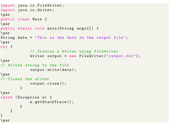

Next: Control Flow and Decision Up: Java Reader/Writer Previous: Java Writer Class Contents
The Writer class provides different methods that are implemented by its subclasses. Here are some of the methods:
Here is how we can implement the Writer using the FileWriter class.
